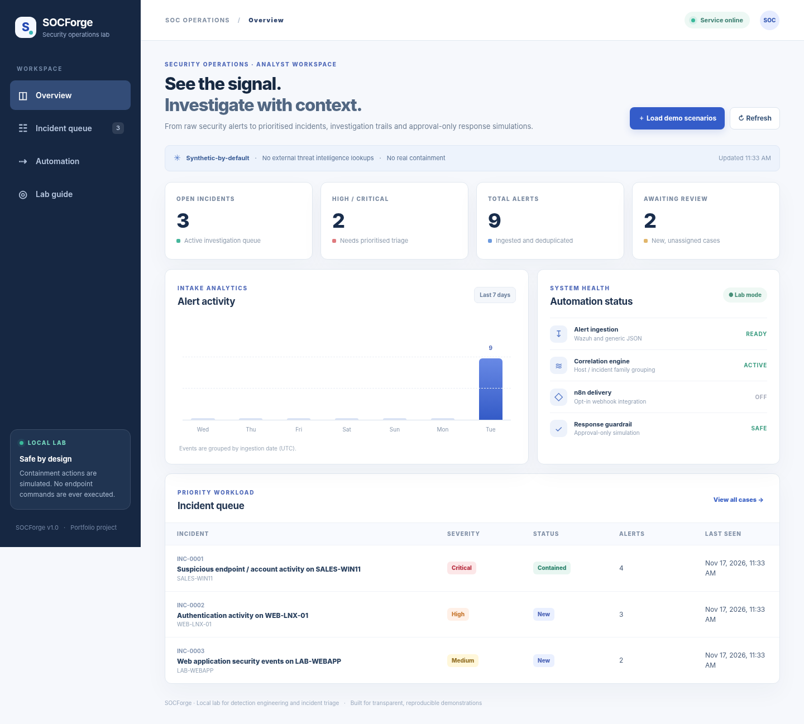

SOCFORGE / PERSONAL LAB / VERSION 1.0
Turn security events into
investigations.
Explore a synthetic, browser-only preview of a real local Python SOC automation application. Select a case, inspect its timeline and practice analyst triage without connecting to production telemetry.
9 synthetic alerts3 related incidents0 live integrations
ALERT EVENTS09Normalized synthetic signals
INCIDENT CASES03Grouped by host and type
HIGHEST PRIORITYCriticalWindows privilege activity
RESPONSE MODEApprovalSimulation only
INVESTIGATION CONSOLE
Incident queue
Select an incident to inspect its evidence and triage workflow.
REAL APPLICATION
What runs locally?
The source repository includes a FastAPI REST service, SQLite persistence, event correlation and risk scoring, analyst case actions, Markdown exports, Wazuh-shaped JSON ingestion and an optional n8n webhook adapter. The public page above is a separate static preview.
Explore the runnable source ↗
Actual local dashboard / synthetic events